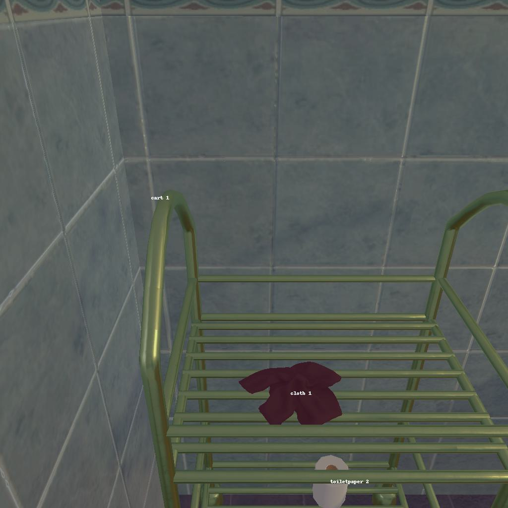

---------------------------------------------------------task: 25---------------------------------------------------------
--------------------------------------------------------------------------------------------------------------------------------------------------------------------
--------------------------------------------------------------------------------------------------------------------------------------------------------------------
Step:--------------------------------------------------------------------------14-------------------------------------------------------------------------------
----------------------------------------
VLM Prompt:
Image1:
**Instruction**
1. Analyze the provided image to identify all visible household objects, focusing on those relevant to the task description "put two dishsponge in cart."
2. Use the analysis of the image and the task hint "The agent must find an object of the desired type, pick it up, find the correct location to place it, put it down there, then look for another object of the desired type, pick it up, return to previous location, and put it down there with the other object." to answer the question: what is the most reasonable action in the choices for the task description "put two dishsponge in cart"?
4. Decide and write the answer using the template: The answer is: (i): , where i is the real number. If there is no desired object in the image, search every place based on **Initial Observation** to find the object. And if no one is exactly correct, choose a similar answer.
**Initial Observation**
You are in the middle of a room. Looking quickly around you, you can see bathtub (1), bathtubbasin (1), cart (1), toilet (1), garbagecan (1), toiletpaperhanger (1), shelf (1-4), sink (1), sinkbasin (1), handtowelholder (1)
**Answer Choices**
(1): go to bathtub 1
(2): go to bathtubbasin 1
(3): go to toilet 1
(4): go to garbagecan 1
(5): go to toiletpaperhanger 1
(6): go to shelf 2
(7): go to shelf 3
(8): go to shelf 4
(9): go to sinkbasin 1
(10): go to handtowelholder 1
(11): take cloth 1 from cart 1
(12): take toiletpaper 2 from cart 1
(13): examine cart 1
**Answer**
Let's think step by step by following the instructions.
----------------------------------------
----------------------------------------
Original Response:
The task is to put two dishsponges in the cart. From the initial observation, we know there is a cart (1) present. In the image, we can see a cart labeled 'cart 1' and there is a cloth labeled 'cloth 1' on it, but no dishsponge is visible. Since the task is to find dishsponges, we should look for places where dishsponges might be kept. Common places to store dishsponges are near the sink or on shelves in a bathroom setting.
Looking at the answer choices, 'go to sinkbasin 1' (9) seems like a reasonable action because dishsponges are often kept near sinks for cleaning. 'Go to shelf 2' (6), 'go to shelf 3' (7), and 'go to shelf 4' (8) are also reasonable actions as shelves might store cleaning supplies like dishsponges. Since there is no direct mention of a dishsponge in the image or the initial observation, checking the sink basin and shelves is a logical next step.
The answer is: (9): go to sinkbasin 1
----------------------------------------
----------------------------------------
>>> Refine Original VLM Response and Get Pure Action: go to sinkbasin 1
----------------------------------------
-----------------------------------------------------------------
Running time: 13.983211278915405 seconds
Total Money: 9.158950000000006
-----------------------------------------------------------------
-----------------------------------------------------------------
Text Observation:You arrive at loc 11. On the sinkbasin 1, you see a faucet 1, a toiletpaper 2, and a soapbar 2.
-----------------------------------------------------------------
UNSUCCEED